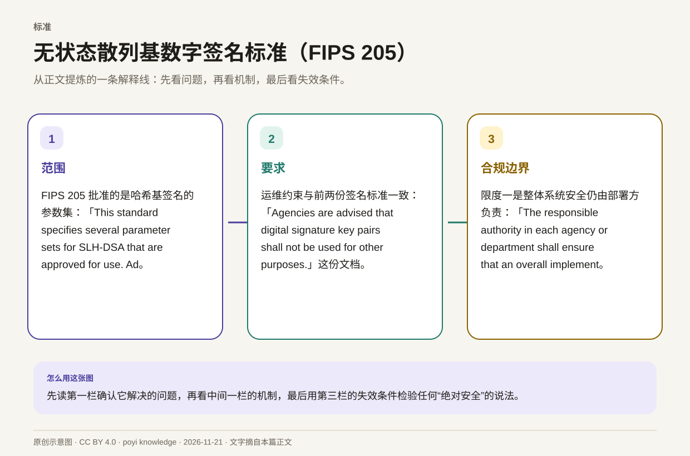
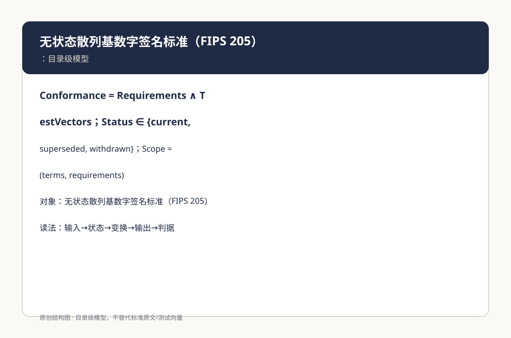

原理与机制
标准：无状态散列基数字签名标准（FIPS 205）（Stateless Hash-Based Digital Signature Standard (SLH-DSA)）。FIPS 205 批准的是哈希基签名的参数集：「This standard specifies several parameter sets for SLH-DSA that are approved for use.Additional parameter sets may be specified and approved in future NIST Special Publications.」——批准边界只到今天列出的档位。

为什么重要
它把安全性建立在哈希假设上：§1 写「The security of the stateless hash-based digital signature algorithm (SLH-DSA) relies on the presumed difficulty of finding preimages for hash functions as well as several related properties of the same hash functions.」，并把自己与既有签名标准区分开——「Unlike the algorithms specified in FIPS 186-5 …, SLH-DSA is designed to provide resistance against attacks from a large-scale quantum computer.」
应用与实例
运维约束与前两份签名标准一致：「Agencies are advised that digital signature key pairs shall not be used for other purposes.」这份文档对签名量的说法只到结构层面：§3 写「Conceptually, an SLH-DSA key pair consists of a very large set of FORS key pairs.」并把 FORS 定性为「a few-time signature scheme」，同段给出限额含义：「The few-time signature scheme FORS allows each key pair to safely sign a small number of messages.」标准给出的是构造与参数上限，未把挪作他用另立禁令。

边界与攻击面
限度一是整体系统安全仍由部署方负责：「The responsible authority in each agency or department shall ensure that an overall implementation provides an acceptable level of security.」限度二是批准范围只向新增开放——正文写明「Additional parameter sets may be specified and approved in future NIST Special Publications」，即由未来的特别出版物追加参数集，本文件不承诺覆盖全部未来形态，也未给出撤销既有档位的通道。
历史与背景
身份行是「Announcing the Stateless Hash-Based Digital Signature Standard」，编号与名称在 FIPS 205 的说明节给出，法源句是一整句「Federal Information Processing Standards (FIPS) publications are developed by the National Institute of Standards and Technology (NIST) under 15 U.S.C.278g-3 and issued by the Secretary of Commerce under 40 U.S.C.11331.」；它与 203/204 同批发布。摘要交代了血统：「SLH-DSA is based on SPHINCS+, which was selected for standardization as part of the NIST Post-Quantum Cryptography Standardization process.」；有状态的一支另由 SP 800-208「Recommendation for Stateful Hash-Based Signature Schemes」处理，而本文件的组件用法被明确限制——WOTS+、XMSS、FORS 与 hypertree 不是独立批准的签名方案，模块不应向外暴露这些组件接口。
逐步示例与核验
形式模型与复算步骤
[S=\min_i S_i,\quad S_i\in{\text{密钥强度},\text{分组安全},\text{实现安全}}]
无状态散列基数字签名标准（FIPS 205）的公开参数、密钥/随机数与消息；变量说明：S 为综合安全强度；各分量取最小值，不能只看密钥位数。1.读取标准规定的密钥/分组/模式参数。2.按标准表换算等效强度。3.取最弱分量作为系统强度。边界：公式只覆盖已登记的参数与假设；参数取值、标准版本和实现细节仍以来源为准。
参考出处
- Wikipedia search entry for 无状态散列基数字签名标准（FIPS 205）. https://zh.wikipedia.org/w/index.php?search=%E6%97%A0%E7%8A%B6%E6%80%81%E6%95%A3%E5%88%97%E5%9F%BA%E6%95%B0%E5%AD%97%E7%AD%BE%E5%90%8D%E6%A0%87%E5%87%86%EF%BC%88FIPS%20205%EF%BC%89
- Handbook of Applied Cryptography (Menezes, van Oorschot, Vanstone). https://www.cacr.math.uwaterloo.ca/hac/
- NIST FIPS 205: SLH-DSA. https://csrc.nist.gov/pubs/fips/205/final
- Published standard/RFC for 无状态散列基数字签名标准（FIPS 205）. https://csrc.nist.gov/pubs/fips/205/final